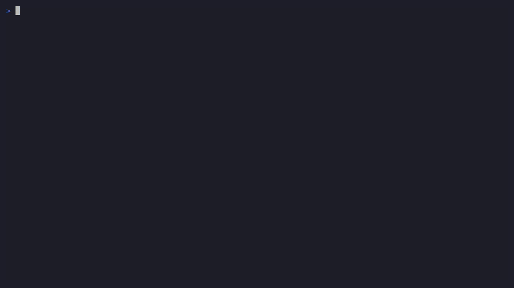

Claude Code を
ローカルで監査する
OpenTelemetry で「誰が・何を入力し・何をさせたか」を手元に残す
単一 Laptop + Docker Compose / Claude Code Pro
課題
- Claude Code は強力 = 何でもできる(bash・ファイル編集・MCP)
- 「誰が・何を入力し・どのツールを・どう判断して実行したか」を
後から追跡したい - でも 外部 SaaS に会話を送りたくない → 手元で完結させたい
→ Claude Code の OpenTelemetry 出力をローカルで受けて保存・可視化する
前提: この3つだけ押さえれば OK
| 種類 | 何を表すか | 保存先 |
|---|---|---|
| メトリクス | 数値の時系列 例: トークン数・コスト・回数 → 「いつ・どれだけ」 | Prometheus |
| ログ/イベント | 1件1件の出来事 例: 誰が何を入力・どのツール実行 → 「何が起きた」 | Loki |
| トレース | 1リクエストの処理の流れと所要時間 → 「どの順で・どこが遅い」 | Tempo |
これらを吐き出す共通規格が OpenTelemetry (OTel)。Claude Code は標準対応。
※ Zabbix / Datadog / ELK 等を運用した経験があれば「監視データの“送る側”を標準化したもの」と思えば OK
アーキテクチャ

ホストの claude に環境変数を渡すだけ。受信側(Collector〜Grafana)は docker compose up 一発。
デフォルトで取れるもの
Metrics
token.usagecost.usage session.countlines_of_code code_edit.decisionactive_timeEvents (logs)
user_prompttool_result tool_decisionapi_request api_errormcp / auth / skill …
共通属性: session.id / user.email / organization.id / terminal.type / model …
✓ 「誰が・いつ・どのツールを・成否・トークン/コスト」はこれだけで取れる
※ コストは「API 単価で計算した推定値」。Pro/Max などの定額プランでは実際には課金されない(利用量の目安)
★ フラグを開けると「中身」まで取れる
| 取りたいもの | 環境変数 |
|---|---|
| ユーザ入力 本文 | OTEL_LOG_USER_PROMPTS=1 |
| tool 入力引数 (bash cmd, path…) | OTEL_LOG_TOOL_DETAILS=1 |
| tool 入出力 コンテンツ | OTEL_LOG_TOOL_CONTENT=1 (traces必須) |
| Claude 出力本文・会話履歴全文 | OTEL_LOG_RAW_API_BODIES=1 |
| 分散トレース (interaction→tool) | CLAUDE_CODE_ENHANCED_TELEMETRY_BETA=1 |
既定はすべて OFF(プライバシー)。有効化すると会話全文・bash コマンド・ファイル内容が残る → 取扱い注意
デモ: 実際に取れている

入力本文 → Claude 出力本文 → tool 引数 → トレース階層 が全部ローカルに
Grafana で可視化（GUI ウォークスルー）
ダッシュボード → ログ(Loki) → トレース(Tempo) を字幕付きで解説 / 詳細は presentation/gui-guide.md
まとめ
- ✓ Laptop + docker compose だけで監査基盤が立つ
- ✓ テレメトリ単独で
入力・出力・tool入出力・トレースまで取得可能 - ! 唯一の限界 = extended thinking はマスク
- ! フルモードは機微情報の塊 → 保存先・保持期間・アクセス制御に注意
リポジトリ: claude-code-audit-poc / README に再現手順
出典: code.claude.com/docs/ja/monitoring-usage